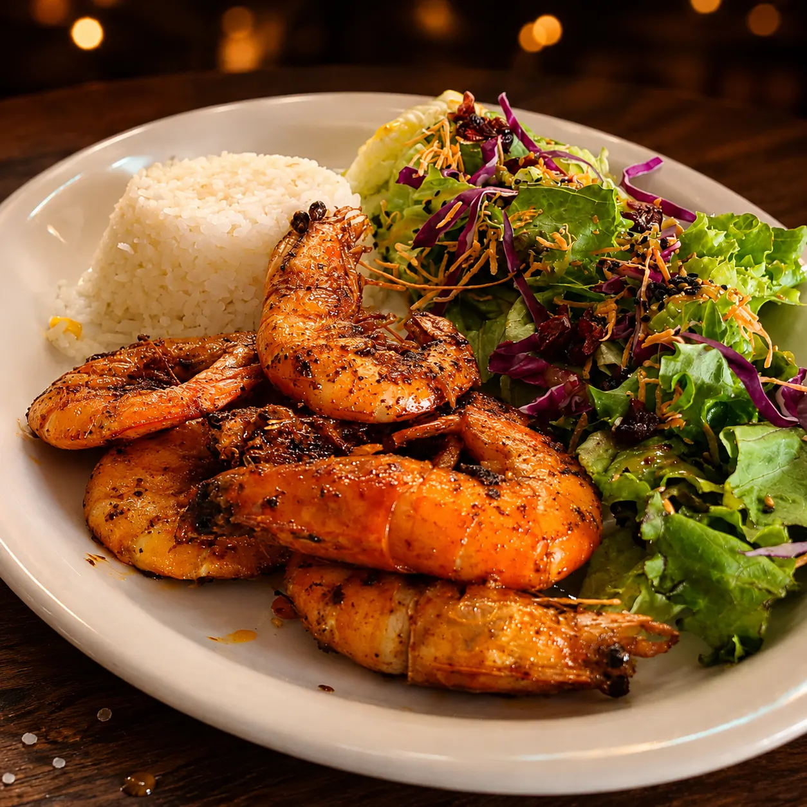
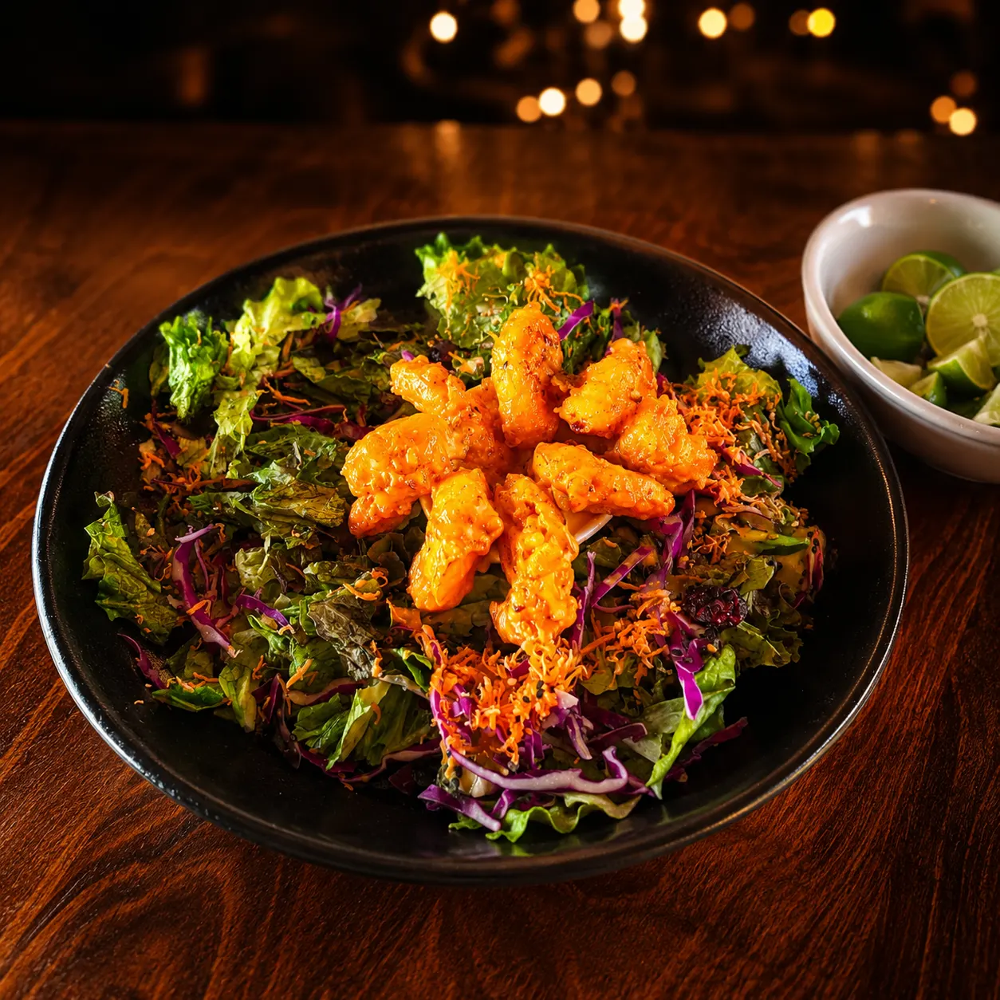
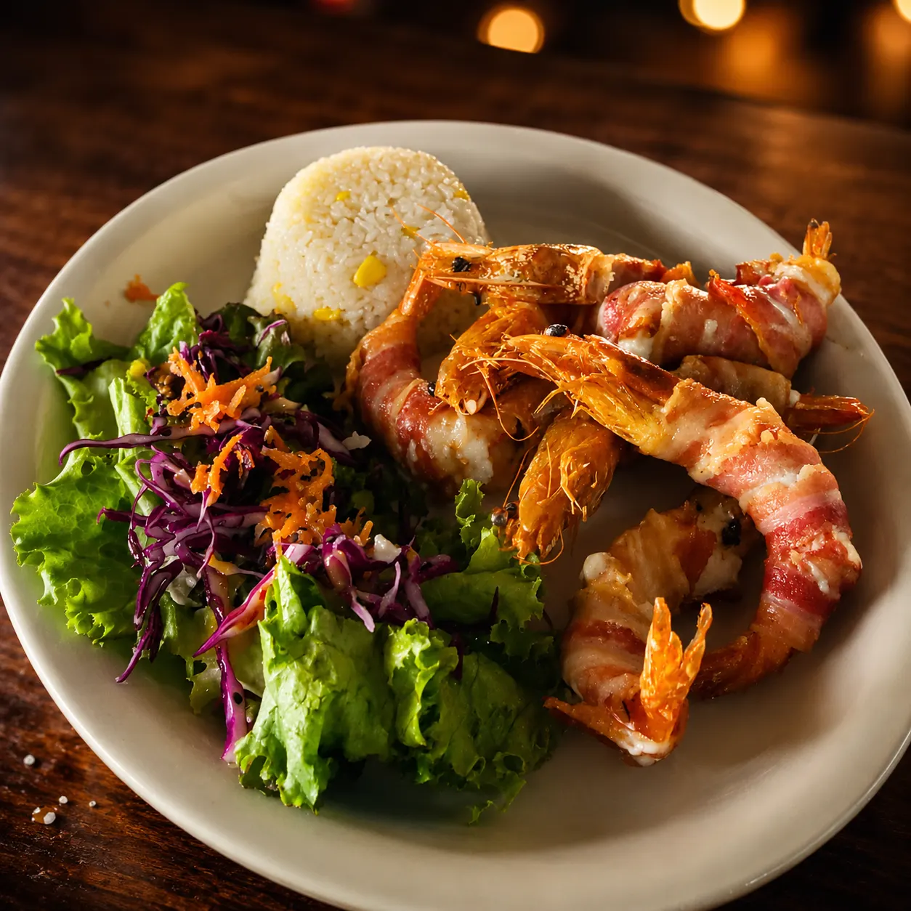
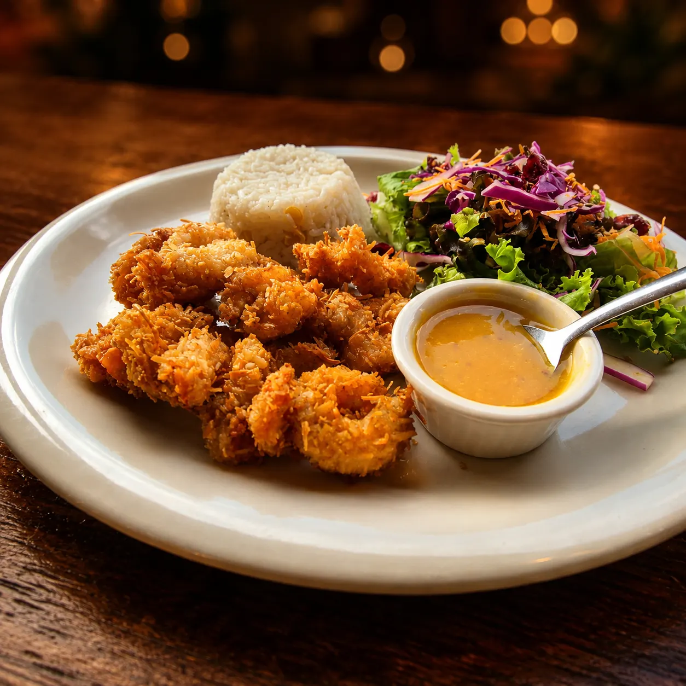

★ Estrella 01

Camarones Mario
Receta original de la casa: camarones salteados en mantequilla con un toque de salsa diabla. Pregunta a tu mesero por el secreto.
$220Once preparaciones distintas, todas a $220 con arroz y ensalada de la casa. Camarón fresco del Pacífico, sazón de Michoacán, recetas de generación en generación. El tripulante más querido del muelle.
Cuatro preparaciones que definen al muelle. Si vienes por primera vez, empieza por aquí.

Receta original de la casa: camarones salteados en mantequilla con un toque de salsa diabla. Pregunta a tu mesero por el secreto.
$220
Camarón tempurizado bañado en salsa spicy. Crujiente por fuera, suave por dentro y con picor balanceado.
$220
Rellenos de queso philadelphia y envueltos en tocino crujiente. La textura más fotogénica de la casa.
$220
Empanizados con coco rallado, acompañados de salsa de mango agridulce. Dulce-salado, favorito de quien viene por primera vez.
$220Todas las preparaciones $220 con arroz y ensalada de la casa.
Tres tamaños y dos opciones (puro camarón, puro pulpo o mixto). El salvavidas es el más completo de la casa.
Nuestros camarones son parte de la carta completa de Mariscos Muelle 27 en Querétaro. Descubre más capítulos:
Once formas de comer camarón, ningún día igual. Pide la momia si nunca la has probado.
Cuéntanos un poco para atenderte mejor.
Estás a un toque de hablar con nosotros al 442 808 5907.